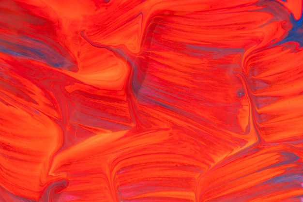

Sobre o Vermelho :
A história do descobrimento ou "fabricação" desta cor pelo homem para específicos usos ou recriação remonta à Pré-História, após serem descobertos registros de pinturas em cavernas que apresentavam o vermelho. Caçadores do período neolítico já consideravam esta cor a mais importante, dotada de poderes relacionados a vida, colocada inclusive nos túmulos de seus mortos - o que explicaria os achados arqueológicos nos quais esqueletos foram vistos cobertos em pó de ocre vermelho; pinturas da mesma época também atribuíam poderes mágicos a esta cor. Por volta do século VIII, na cultura nórdica, o nome usado para o vermelho derivou de teafor (magia), que tornou-se mais tarde ocre vermelho, provavelmente por conta do óxido de ferro já usado para colorir e para evocar a fertilidade. Para as mais variadas culturas ao redor do mundo antigo, o vermelho detinha poderes mágicos relacionados à invencibilidade, proteção, força e intimidação, como visto em pinturas de Jan Van Eyck (1434).
Inclusive a fênix, que ainda simboliza o renascimento, está relacionada ao vermelho, por seus poderes de vida e por estar ligada à ira e à guerra, quando os homens partiam para as batalhas. Em casamentos, o vermelho foi cor tradicional em guirlandas e roupas da época romana até o século XVIII, graças a seu simbolismo de fertilidade, mantendo-se ainda como característica cultural grega, albanesa e armênia; no Oriente, a China perpetuou a tradição de vestir suas noivas de vermelho. É ainda lá que ovos na cor representam boa sorte ao recém-nascido.
Na Europa, no período da Idade Média, os homens já utilizavam do escarlate para tingir tecidos, preparar cosméticos e como ingrediente culinário, graças a cochonilha, inseto capaz de produzir substância avermelhada. No Egito, possuía, junto a outras cores, significados psicológicos, e no Oriente, era já considerada uma cor comum. No século XVII, o rei francês Luís XIV instituiu o vermelho como a cor da nobreza, ao usá-lo em roupas, calçados e colorindo palácios, em tapeçaria. Durante a Revolução Francesa, foi a cor da insurreição. Na América, os índios usavam recursos naturais, como o urucum, para obter a coloração e se enfeitarem ou camuflarem-se para batalhas. No papiro de Ebers, dito o livro médico mais completo e antigo da Humanidade (1 550 a.C), o vermelho foi utilizado nos títulos dos capítulos, nos nomes das doenças e nas dosagens dos medicamentos, já que no Egito era a cor usada para dar ênfase.
De acordo com uma antiga lenda grega, as rosas vermelhas - símbolos de amor e fidelidade - vêm do sangue de Adônis, morto por um javali durante uma caçada. Assim, para esta mitologia, o encarnado é o ciclo de crescimento e declínio, além de ser a cor dedicada a deusa Afrodite. Todavia, o vermelho não representou apenas positivismo. Para os israelitas dos tempos bíblicos, o vermelho era a cor do sangue para espantar demônios; no Egito antigo era a cor representativa do deus Set e da maldade.
Supostamente a primeira cor a ser percebida pelo homem, é também a primeira a ser vista por pessoas que sofreram danos cerebrais e tiveram cegueira temporária. Com o passar dos anos, esta cor ganhou tons e variações, conotações e simbolismos, que vão do amor a ira, representando o vermelho das rosas preferidas para o Dia dos Namorados a camisas de times de futebol pelo mundo.
Significado:
A palavra vermelho tem sua origem no latim vermillus, que significa "pequeno verme", remetendo-se à cochonilha, inseto do qual é extraído o corante carmim utilizado em tintas, cosméticos e como aditivo alimentar. Seu prefixo grego é eritro-. Trata-se de uma cor-luz primária e secundária (CMYK) e cor-pigmento primária. O vermelho é associado com a cor do sangue, algumas flores (especialmente rosas) e frutas maduras (como maçãs, morangos e cerejas). O fogo também está altamente ligado à cor, assim como o sol e o céu ao pôr-do-sol. Após a ascensão do socialismo na segunda metade do século XIX, o vermelho passou a ser utilizado também para descrever movimentos revolucionários.
De acordo com definição em dicionário de língua portuguesa, vermelho é um substantivo masculino que significa cor muito viva, correspondente "a um dos limites visíveis do espetro solar", que nomeia de ruivos a animais.
Ciência da cor:
Esta cor, junto ao azul e ao amarelo, é considerada pigmento-primária, ou seja, é independente e não se decompõe, já que não deriva de nenhuma outra cor. Ao que o vermelho é misturado com as outras duas primárias, gera o preto - conhecido como ausência total de cor; ao que se mistura com apenas uma outra, o resultado é uma cor secundária; ao que se mistura com uma cor secundária, o resultado é uma terciária. Há ainda a possibilidade de se gerar as cores intermediárias, que são obtidas durante a transição de primária para secundária.
O vermelho é um número de cores semelhantes evocadas pela luz constituída essencialmente da maior onda de luz visível pelo olho humano, na gama de comprimento de onda de cerca de 630 a 740 nm. As ondas maiores que esta são chamadas de infravermelho, ou "abaixo do vermelho", e não podem ser vistas pelo olho humano. O comprimento de onda vermelha tem sido um fator importante nas tecnologias de raio laser, especialmente o laser vermelho, utilizado inicialmente em tecnologias de discos compactos, mais tarde substituído por lasers azuis, uma vez que o comprimento da onda vermelha faz com que as gravações ocupem mais espaço em disco que a tecnologia de laser azul.
Cientificamente, a principal teoria para a razão pela qual os primatas desenvolveram sensibilidade ao vermelho diz que esta foi a maneira encontrada para distinguir frutas maduras de frutas verdes e vegetação não comestível. Isto teria levado a novas adaptações que se aproveitaram dessa nova capacidade, tais como as faces vermelhas de babuínos. A luz vermelha também é utilizada para preservar a visão noturna em situações de pouca luz, uma vez que as células bastonetes do olho humano não são sensíveis ao vermelho. O vermelho é ainda uma das três cores aditivas primárias da luz, complementar ao ciano, no sistema de cor vermelho-verde-azul (RGB), mas não é subtrativa primária no espectro de cores azul-vermelho-amarelo-preto (CMYK).
Um uso comum do vermelho como uma cor aditiva primária é no modelo de cores RGB. Como o vermelho não é por si só uma cor padronizada, misturas de cores com base nele também não são especificações exatas da cor. O governo dos Estados Unidos, por exemplo, estabeleceu certas especificações de quais tintas devem ser usadas quando o vermelho é indicado num projeto. Para que os computadores possam produzir cores exatas, o vermelho precisa ser definido em termos de um espaço de cor absoluta, como na correção de cor sRGB (de modo que o vermelho seja produzido de forma padronizada e não apenas cheio da intensidade do corante vermelho).
Para se estudar esta cor em âmbito mais técnico e específico, foi preciso seguir certos procedimentos, que geraram um esquema didático e organizado de análise não só para o vermelho, mas para todas as cores. É necessário que se compreenda a natureza física e gnosiológica da cor, bem como as espécies, as propriedades, a psicodinâmica, a harmonia, o ritmo e as alianças entre uma arte e outras artes. Para se entender o que é uma cor fisicamente, é necessário que se tenha em mente o conceito de luz e o comprimento de onda. O vermelho, por exemplo, quando raios luminosos penetram em um prisma, desvia-se em ângulo menor, bem próximo ao azul, verde, amarelo e laranja. Por ser uma cor cuja sensibilidade (em aspecto físico) é maior aos olhos, o vermelho é percebido por daltônicos e sua maior luminosidade atiça cães e touros, que não percebem cores, mas sim luz. Uma criança, que até os dois anos reage primeiro à luminosidade, prefere o vermelho para vestir e ter em seus brinquedos.
A luminosidade desta cor enquanto primária é de 17%, sendo notavelmente viva. Seu brilho se mantém ao ser misturada com o amarelo para formar o laranja. Todavia, ao ser misturada com o azul, esta luminosidade decaia consideravelmente. Ao ser misturada com outras cores para formar pigmentos terciários, sua neutralização não impede que existam resultados luminosos. Definida através de relações extrínsecas, de cromatismo, intensidade e luminosidade, o vermelho apresenta uma gama de variações cujos nomes possuem relações culturais, como o vermelho cardeal, que refere-se a cor usada pelos cardeais da Igreja Católica.
Na fotografia, a iluminação vermelha foi - e por vezes ainda é - utilizada como uma luz segura para se trabalhar num quarto escuro, uma vez que ela não expõe o papel fotográfico e outros filmes. Embora a maioria dos quartos escuros modernos utilizem a iluminação cor de âmbar como luz segura, a iluminação vermelha está intimamente associada com os quartos escuros na mente da maioria das pessoas.
Presença na cultura humana:

Na cultura humana, o vermelho ganhou diversos significados e simbolismos, representando sentimentos que vão da paixão à raiva, colorindo objetos e nomeando de bandas musicais a ruas, e como as demais cores, faz parte da vida do homem desde o início de sua história, suprindo mais as necessidades psicológicas que as estéticas.
De acordo com a psicologia das cores e a cromoterapia, o vermelho significa motivação, atrai coisas novas e incentiva o recomeço. É ainda o espírito do pioneirismo e a persistência, bem como a prosperidade e a gratidão. Todavia, o vermelho é também a indecência, a grosseria, a crueldade, a revolta e a brutalidade. No espírito, o vermelho abate a tristeza, a depressão e a letargia, enquanto que para o corpo, é tônico. À saúde, o vermelho é usado em tratamento contra hipertensão, anemia e inflamações; combate o esgotamento e o princípio do resfriado, caso se use objetos na cor perto da garganta, por exemplo.
Inserido na sociedade com o provável primeiro intuito de representar as caçadas durante o período da Pré-História, o vermelho, no Japão, é a cor que representa a sub-liderança, sendo o segundo mais forte na ordem hierárquica dos heróis de tv. Nas artes marciais, é uma das faixas mais difíceis de serem atingidas: No judô e no karatê, por exemplo, o vermelho indica os últimos estágios do aprendizado do lutador. Historicamente, acredita-se que a predileção pelo vermelho nestes casos tenha vindo de uma importante batalha entre clãs japoneses, na qual os Heike usavam de bandeiras avermelhadas para representá-los. O taekwondo é outro estilo de luta que utiliza do vermelho como último estágio antes das graduações pretas, tidas como as mais elevadas, ao passo que para o jiu-jitsu, o encarnado é a cor da faixa mais importante, utilizada apenas pelos decanos. Ainda enquanto colorindo vestimentas, esta cor é usada nas becas de ciências humanas para os formandos brasileiros.
O vermelho está presente na produção artística desde que o homem começou a pintar. Na Pré-História, achados arqueológicos mostram a utilização de ocre vermelho em pinturas de cavernas. Os artistas daqueles tempos eram chamados também de paleolíticos, como o homem e o período, e usavam dos dedos tanto para preparar a tinta, quanto para pintar. No Egito Antigo, durante o tempo compreendido entre 8000 e 5000 a .C, foi desenvolvida a chamada arte egípcia, que incluía pinturas feitas em sarcófagos, paredes e papiros. Para isso, eram utilizadas cores naturais e sintéticas. Entre as naturais estava o vermelho, obtido também através do ocre, conhecido também pelos gregos e romanos. Os europeus, por sua vez, possuíam uma técnica de pintura em cerâmica, na qual não usavam de uma tinta vermelha, mas sim de uma preta: o fundo, natural deste material, dava a impressão do desenho ser vermelho, ao passo que os contornos eram em pigmentos negros. Destacado nesta arte foi Exéquias, considerado o maior pintor de figuras negras.